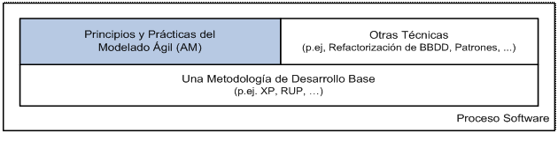
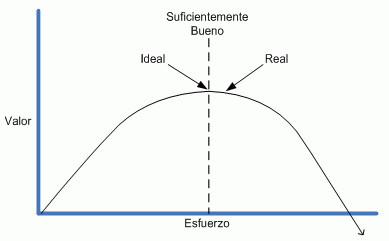
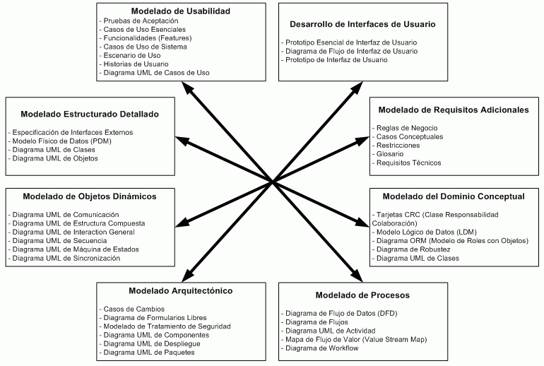
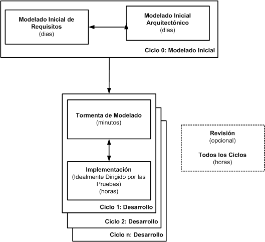
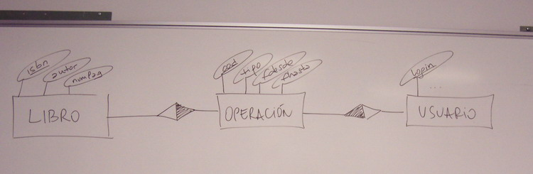
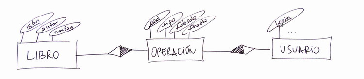

Modelado Ágil
Agile Modeling (AM)
El Modelado Ágil (AM) fue propuesto por Scott Ambler no tanto como un metodología ágil cerrada en sí misma, sino como complemento de otras metodologías, sean éstas ágiles o convencionales. AM no es proceso completo ni un metodología ágil, sino un conjunto de principios y prácticas para modelar y realizar el análisis de requisitos, complementando a la mayoría de metodologías iterativas. Ambler recomienda su uso con XP, RUP o cualquier otra metodología. En el caso de XP los practicantes podrían definir mejor los procesos de modelado que en ellos faltan, y en el caso de RUP, el modelado ágil permite hacer más ligeros los procesos que ya usan.

AM es una estrategia de modelado (de clases, de datos, de procesos) pensada para contrarrestar la sospecha de que los métodos ágiles no modelan y no documentan. Se la podría definir como un proceso de software basado en prácticas cuyo objetivo es orientar el modelado de una manera efectiva y ágil. AM promueve el uso de prácticas que fomentan la velocidad, simplicidad y el flujo de creatividad, siguiendo una política de detalle vs tecnología (low-tech, high-touch), de modo que se utilicen procedimientos prácticos en detrimento de técnicos
Objetivos y Valores
Los principales objetivos de AM son:
- Definir y mostrar de qué manera se deben poner en práctica una colección de valores, principios y prácticas que conducen al modelado ligero.
- Describir como aplicar las técnicas de modelado en equipos que desarrollan software mediante un enfoque ágil.
- Describir como mejorar las actividades de modelado mediante un enfoque "casi-ágil", en particular, en proyectos que sigan una metodología similar a RUP.
Los valores de AM incluyen a los de XP: comunicación, simplicidad, feedback y coraje, añadiendo humildad. La humildad porque hemos de admitir que quizás no lo sepamos todo, que el resto de compañeros tienen cosas que aportar a los proyectos.
¿Qué es un Modelo Ágil?
Un modelo es una abstracción que describe uno o más aspectos de un problema o de una posible solución a un problema. Tradicionalmente, la palabra modelo es sinónimo de 0 o más diagramas anexos a la documentación. Sin embargo, también son modelos los artefactos no-gráficos, como las tarjetas CRC, la descripción textual de una o más reglas de negocio, o la descripción en pseudo-código de un proceso de negocio.
Un modelo ágil es un modelo suficientemente bueno. Pero, ¿cómo saber si un modelo es suficientemente bueno? Un modelo es ágil si:
- Cumple con su propósito, ya sea para comunicar o para comprender.
- Es comprensible por la audiencia a la que van dirigidos. Un modelo valido para el equipo de desarrollo no nos va a servir para mostrarlo a los usuarios.
- Es suficientemente preciso. Lo normal es no necesitar el 100% de precisión en un modelo.
- Es suficientemente consistente. Nos podemos permitir nombrar al mismo elemento de forma diferente en 2 modelos distintos (contraseña y password), siempre y cuando quede claro que es el mismo objeto.
- Esta suficientemente detallado, dependiendo de la audiencia y del proyecto.
- Aporta valor positivo. Es decir, es un modelo que vale la pena realizar, y que no conlleva más esfuerzos que lo que llega a aportar. No lo hacemos por obligación.
- Es tan simple como sea posible. Siempre hemos de tener el principio KISS en mente.

¿Qué es (y no es) el Modelado Ágil?
Una de las mejores maneras de explicar algo es mediante lo que un sistema es y no es. Así pues, los alcances de AM son:
- AM es una actitud, no un proceso prescriptivo. Comprende una colección de valores a los que los modeladores ágiles se adhieren, principios en los que creen y prácticas que aplican. Describe un estilo de modelado; no es un recetario de cocina.
- AM es suplemento de otras metodologías. El primer foco es el modelado y el segundo la documentación. AM se debe complementar con otras metodologías base (XP, RUP, ...)
- AM es un modo de trabajar en equipo. Fomenta tanto el trato entre iguales (desarrolladores) como desarrollador-cliente. No hay "yo" en AM ("There is no I in agile").
- AM es efectivo y trata sobre ser efectivo. AM ayuda a crear un modelo o proceso cuando se tiene un propósito claro y se comprenden las necesidades de la audiencia; contribuye a aplicar los artefactos correctos para afrontar la situación inmediata y a crear los modelos más simples que sea posible. No se ha de hacer más del mínimo que cumpla.
- AM es algo que funciona en la práctica, no una teoría académica. Las prácticas han sido discutidas desde 2001 en comunidad (www.agilemodeling.com/feedback.htm).
- AM no es una bala de plata. Se trata de una técnica efectiva para mejorar el desarrollo, no de la gallina de los huevos de oro.
- AM es para el programador promedio, pero no reemplaza a la gente competente. Se necesitan conocimientos básicos, y cuantas más técnicas de modelado, mejor.
- AM no es un ataque a la documentación. La documentación debe ser mínima y relevante, pero es obligatoria. Es decir, los modeladores ágiles crean documentación, pero aquella que máxima los esfuerzos invertidos en su creación y mantenimiento.
- AM no es un ataque a las herramientas CASE. El uso de las herramientas más sencillas, en ocasiones supondrá utilizar una hoja de papel o una pizarra, y en otras ocasiones, una herramienta CASE.
Principios
Principios Centrales
Los principios centrales son aquellos que se deben adoptar para realmente poder afirmar que se está realizando un modelado ágil. Igual que con XP, estos principios se tienen que tomar como un conjunto, ya que los principios por separado pierden efectividad.
- El software es el principal objetivo. Los modelos son un medio hacia el fin; el fin es construir software para el cliente. La documentación y el diseño deben servir para conseguir este objetivo. Cualquier actividad que no contribuya a este objetivo debería cuestionarse , y si no puede justificarse, entonces la evitaremos.
-
Permitir el siguiente esfuerzo. El desarrollo no es una actividad aislada; otros desarrolladores necesitaran extender o mejorar nuestro proyecto cuando ya no estemos. Así pues, debemos garantizar que el sistema es suficientemente robusto (mediante los modelos y documentación suficientemente necesaria) para admitir mejoras posteriores; debe ser un objetivo, pero no el primordial.
ConsejoHay que pensar en los que vengan detrás, ya que podemos volver a ser nosotros de nuevo. Ten siempre un ojo en el futuro.
- Viajar ligero de equipaje. No crear más modelos de los necesarios, sólo los justos. Con pocos modelos el equipo perderá su camino, y con demasiados, olvidarán el objetivo principal de desarrollar software y no documentos. Hemos de tener en cuenta que cada modelo que creemos y decidamos conservar, hemos de mantenerlo hasta el final. Por ejemplo, si tenemos 7 modelos, y ocurre un cambio, hemos de considerar el impacto del cambio en los 7 modelos. Si solo decidimos mantener 3 modelos, las cosas se simplifican. Además de la cantidad, hemos de vigilar la complejidad de los modelos (cuantos más difíciles, más pesan)
- Asumir simplicidad. Mantén los modelos tan simples como puedas, teniendo en cuenta que la solución más simple es la mejor. Modela sólo lo que necesitas para hoy y confía en que puedes remodelar si fuese necesario.
- Abrazar los cambios. Conforme crezca el conocimiento que tenemos del proyecto, sucederán los cambios. Además, aparecerán nuevos requisitos. En vez de luchar contra los cambios, hemos de aceptarlos y tener el valor de reconstruir los modelos.
- Cambio incremental. Los modelos no tienen porque estar bien a la primera; cambiarán conforme se desarrolle el proyecto, mediante pequeños cambios. Además, no es necesario capturar todos los detalles en los modelos. Cuando se necesiten, se irán añadiendo.
-
Modelar con un propósito. Si no se puede identificar por qué se está haciendo algo ¿porqué molestarse? El primer paso es identificar un propósito valido para el modelo y a quien va enfocado (audiencia). A partir del propósito y la audiencia, desarrollaremos el modelo hasta el punto que sea suficientemente preciso y suficientemente detallado.
¿Pregunta...?Un modelo que he realizado yo mismo y para mi con el objetivo de comprender mejor un subsistema de la aplicación, ¿ Puede servirle a un equipo de mantenimiento ?
- Múltiples modelos. Existen muchas maneras de modelar una solución: elige aquella que mejor encaja con tu situación. Por ejemplo, los modelos de datos para el equipo de base de datos. Cuando tengas la oportunidad, expande el conjunto de técnicas que conoces y aprende nuevas. Y recuerda que UML es un buen punto de partida, pero no es la panacea, existen otras soluciones.
- Trabajo de calidad. No hace falta que sea perfecto, solo suficientemente bueno, pero siempre teniendo en mente la calidad. Si un modelo no comunica, no es un buen modelo.
- Realimentación rápida. El tiempo entre una acción y su retroalimentación es crítico. El hecho de trabajo junto al cliente y realizar actividades de modelado en grupo permiten obtener retroalimentación casi instantánea.
- Maximizar el ROI del cliente. El cliente invierte recursos (tiempo, dinero, ...) para que desarrollemos software que cumpla sus expectativas. Si el modelo que creamos no añade valor ¿para qué crearlo? Hemos de tener en mente que la documentación del sistema es una decisión de negocio, no una decisión técnica. Si el cliente no quiere documentación, es él el que asume los riesgos que conlleva.
Principios Adicionales
Los principios adicionales definen conceptos importantes que ayudan a realzar los esfuerzos de modelado:
-
El contenido es más importante que la representación. Lo que se dice es más importante que el cómo se dice. La gran mayoría de las veces malgastamos tiempo mediante un herramienta CASE cuando un folio es suficiente.
Cualquier modelo tiene múltiples modos de representarlo. Por ejemplo, la especificación de una GUI se puede crear mediante notas Post-It, folios DIN A3, diagramas en pizarras, mediante una herramienta de prototipado, o mediante un documento formal incluyendo una representación visual y una descripción textual. Por lo tanto, independientemente de la técnica de representación, lo más importante es el contenido. - Comunicación abierta y honesta. Mediante un enfoque AM se exige que los integrantes del equipo de desarrollo expresen sus ideas, sentimientos, frustraciones y diferentes puntos de vista. El equipo tomará decisiones con más fundamento mediante el cultivo de un lugar de trabajo abierto y honesto, donde no se critiquen las comunicaciones aunque no beneficien a todos.
Desde la publicación del libro de presentación, Ambler considera una serie de principios como "deprecated", ya que considera que no son necesarios para formar a un modelador ágil pero que son buenas ideas. Estos principios se exponen a continuación:
- Todo el mundo puede aprender de algún otro. Aprender y educarse no basta con los libros; también debemos aprender mientras trabajamos. Los cambios tecnológicos se producen a un ritmo que nadie puede asegurar que lo sabe todo. Así pues, hemos de sacar partido de nuestro compañeros y aprender/enseñar todo lo que podamos.
- Conoce tus modelos. Para poder afrontar las diferentes técnicas de modelado que se fomentan mediante el uso de múltiples modelos, si no sabemos los pros y contra de cada una de las técnicas, no vamos a poder sacar todo el partido.
- Adaptación local. Se debe producir el modelo que resulte suficiente para el propósito. En ocasiones, el cliente puede insistir en determinadas herramientas de modelado o estándares a seguir. AM ofrece la flexibilidad necesaria para asumir estas restricciones.
- Trabajar con los instintos de la gente. Si sientes que algo no va a funcionar, confía en tus instintos, ya que muchas veces el subconsciente puede ser una entrada importante en los esfuerzos de modelado. Con la experiencia, los instintos se agudizan, y en ocasiones, si notamos que algún requisito es inconsistente o si adivinamos que la arquitectura tiene fallos, debemos tener coraje y tomar una decisión.
Prácticas
Las prácticas AM se formulan a partir de los principios. Aunque hasta que no se adoptan todas las prácticas centrales no se puede decir que se esta adoptando AM, algunas de estas por separado son igual de útiles en un equipo que no se considera ágil.
Prácticas Centrales
- Colaboración activa del cliente (e interesados). AM funciona porque confía en que el cliente participa de forma activa en el proceso de modelado (igual que XP fomenta el Cliente in-situ). Esto requiere que los desarrolladores exhiban flexibilidad con los enfoques y notaciones de modelado.
- Utilizar las herramientas más simples (CASE, o mejor pizarras, tarjetas, post-its). Los desarrollares no-ágiles tienden a modelar en papel o pizarra y luego transcribir los modelos a una herramienta de diseño (de diagramado o CASE). Los desarrolladores ágiles no malgastan tiempo de trascripción, y mediante una simple fotografía (ahora que las cámaras digitales están tan baratas) tienen el diagrama almacenado; ya que la mayoría de diagramas son de "usar y tirar". Los desarrolladores ágiles utilizarán una herramienta CASE compleja (tipo Borland Together) cuando tenga sentido (por ejemplo, generar el código esqueleto de la aplicación).
- Modelar con otros. Cuando se Modela con un propósito, normalmente se realiza para comprender algo, para comunicar tus ideas a otros, o en búsqueda de una visión conjunta del proyecto. Se trata de una actividad de grupo, donde la comunicación amplifica la efectividad del equipo.
- Poner a prueba con código. Un modelo es una abstracción, y hasta que no se implementa y prueba, no podemos estar seguros de que sea correcta. Destacar que dentro de un enfoque iterativo, el modelado forma parte del conjunto de tareas de desarrollo. Modela, implementa y prueba.
- Aplicación de los artefactos correctos. Los desarrolladores ágiles eligen la herramienta correcta. Existen muchísimos artefactos (www.agilemodeling.com/artifacts): diagramas UML, flujos de datos, modelo de datos conceptual, diagramas de interfaces de usuario, etc... Esto implica la necesidad de conocer las ventajas e inconvenientes de cada tipo de artefacto, para poder determinar cuando utilizar o no uno de ellos. Pero siempre hemos de tener en mente que: "Si una imagen vale mil palabras, entonces un modelo vale 1024 líneas de código" :)
- Crear diversos modelos en paralelo. Como cada tipo de modelo tiene sus ventajas e inconvenientes, no existe el modelo perfecto. Cuando se utilizan diferentes modelos sobre un problema, la expresividad aumenta.
- Iterar sobre otro artefacto. Cuando al trabajar en un artefacto (caso de uso, CRC, o incluso código fuente) y sientas que estas bloqueado, deja lo que estés haciendo, y trabaja sobre otro artefacto. Cada artefacto tiene sus ventajas e inconvenientes, y para desbloquearse, lo mejor es enfocar el mismo problema desde un punto de vista distinto.
- Modelar en incrementos pequeños. Se sigue el contexto de desarrollo iterativo: modelar, comunicar, refinar y remodelar. De este modo, modelamos lo suficiente y abrazamos los cambios.
- Propiedad colectiva de todos los elementos. Todo el mundo puede trabajar en cualquier modelo, y si fuera necesario, en cada artefacto del modelo.
- Crear contenido simple. Todos los contenidos del modelo (requisitos, análisis, arquitectura ..) deben ser simples, pero cumpliendo las necesidades del cliente. No se debe añadir aspectos adicionales en los modelos a no ser que sean justificados. Hemos de tener el coraje para añadir una funcionalidad cuando se nos pida, ni antes ni después.
- Diseñar modelos de manera simple. De todos los posibles diagramas a utilizar, hemos de utilizar un subconjunto sencillo. Un modelo simple con un diagrama de clases y la relación entre éstas suele ser suficiente. Se pueden realizar muchísimos más diagramas, pero la mayoría de la veces, no aportan valor. Igualmente, el representar los getter/setter en una clase tampoco aclara nada.
- Exhibir públicamente los modelos. Los modelos deben estar visibles a todos los integrantes en la "pared de modelado". Esta pared, ya sea física o mediante un pizarra con pie (incluso una pared virtual dentro del wiki de proyecto), fomenta la comunicación honesta y abierta.
Prácticas Adicionales
Dependiendo del tipo de empresa y del proyecto, a continuación se muestran las prácticas que opcionales puede adoptar un equipo ágil:
-
Aplicación de estándares de modelado. Todos los desarrolladores deben seguir unos estándares compartidos de modelado. Al igual que ocurre con el código, el uso de estándares de modelado (UML, OMG, ...) y de guías de estilo (www.agilemodeling.com/style) facilita el trabajo.
¿Que diferencia hay entre un estándar y una guía de estilo?Si hablamos de código, un estándar es nombrar los atributos con camelCase, mientras que un guía de estilo sería tabular las instrucciones anidadas a un bucle/condicional.
Si hablamos de diseño, un estándar es utilizar un rectángulo para modelar una clase, mientras que un guía de estilo y situar las subclases debajo de las clases padre. - Aplicación adecuada de patrones de modelado. Teniendo siempre en cuenta la simplicidad, hemos de utilizar patrones de diseño cuando realmente sean necesarios. Algunos patrones, pese a ser la mejor solución, son complejos, y por tanto, si no son necesarios, es mejor evitar el sobremodelado, y ceñirnos a lo que tenemos.
- Descartar los modelos temporales. La mayoría de modelos que se crean son temporales (borradores de diseño, prototipos escuetos, tarjetas CRC, posibles arquitecturas, ...); son modelos que han cumplido su papel, pero que ya no aportan ningún valor. Los modelos caducan muy rápido, ya que el código no para de modificarse, y los costes de sincronizar los modelos con el código no compensan. Por lo tanto, como mucho, les tomaremos una foto, y los tiramos a la basura.
-
Formalizar modelos de contrato. Los contratos de modelado se suelen necesitar cuando nuestro sistema necesita información de un sistema externo. Ambas partes se comprometen a cumplir el contrato para poder intercambiar la información, y en el caso de necesitarse, al realizar un cambio, la otra parte también propagará la modificación. Por ejemplo, interfaces de entrada a la aplicación, descripción de ficheros XML mediante XML Schema o DTDs, o el modelo físico de un subsistema de la base de datos.
El objetivo, para mantener la agilidad, es minimizar el número de modelos de contratos del sistema, ya que suelen ser actividades que conllevan mucho trabajo de creación y mantenimiento. Además, siempre se utilizarán medios electrónicos (documentos o páginas web/wiki) ya que el contrato nos obliga a mantenerlo. -
Actualizar sólo cuando duela. Los modelos deben actualizarse únicamente cuando sea absolutamente necesario, cuando el hecho de no tener el modelo desactualizado sea más doloroso que el esfuerzo que conlleve actualizarlo. Siguiendo esta práctica, tendremos que la mayoría de las veces no vamos a actualizar nuestro modelos. En cambio, si por ejemplo, hemos realizado un gran número de refactorizaciones sobre un subsistema de la aplicación, el actualizar el modelo nos ayudará a tener una visión más clara del mismo.
CuriosidadPara explicar esta práctica Ambler compara los modelos con los planos. Todos sabemos que en las ciudades (y en Alicante también) no paran de cambiar los sentidos de las calles, poner rotondas, etc... Si tengo un plano de Alicante de hace un par de años ¿Vale la pena comprar un nuevo plano cada año para que aparezcan todas las calles de forma correcta?
Al igual que con los principios, Ambler también considera una serie de prácticas como "deprecated":
- Considerar la verificabilidad. Conforme se desarrolla un modelo, hemos de considerar como se puede validar. Y como hemos de seguir un enfoque de TDD, esta práctica esta implícita en el AM.
- Modelar para comunicar. Una de las razones del modelado es la comunicación con un integrante del equipo o con un contrato. Puede que sea necesario emplear tiempo en hacer los modelos "bonitos" mediante medios electrónicos (procesadores de texto, herramientas de diagramación o incluso sofisticadas herramientas CASE) para poder enviarlos a gente externa al equipo.
- Modelar para comprender. El objetivo principal del modelado es comprender el dominio del problema, identificar y analizar los requisitos, o comparar las posibles alternativas de diseño.
- Reutilizar los recursos existentes. Puede que algunos patrones de análisis o diseño sean apropiados para el sistema. O incluso modelos de datos, procesos de negocio, etc...
Artefactos
El desarrollo de software es complejo. Cada tipo de modelo es bueno desde un punto de vista determinado, y por tanto, pueden ser necesarios muchos puntos de vista. Para esto, es necesario conocer un conjunto extenso de técnicas (no hace falta dominarlas todas, pero al menos, aquellas que más utilicemos).
Los artefactos de AM se muestran a continuación agrupados por categorías, donde en cada categoría hay técnicas similares:

Escenario Ágil
Para aclarar este concepto, vamos a exponer un escenario de modelado ágil. Sea la oficina donde se desarrolla un proyecto, exactamente la habitación donde se desarrolla el software. Esta debe tener las paredes limpias (sin decoración), cubiertas con pizarras blancas de belleda y con material para dibujar y borrar. Lunes por la mañana, inicio de una iteración de tres semanas. El equipo de 8 desarrolladores ha decidido dedicar 2 o 3 horas en las paredes para comprender y comunicar mejor sus ideas. Tras ello, comenzarán a programar.
Se dividen en grupos. El grupo 1 analiza el diseño de objetos para el escenario principal de la aplicación. En la mitad de una pizarra, realizan un borrador de un diagrama UML de secuencia. No es UML estándar, para eso es un borrador. Tras 15 minutos, se cambian a la otra mitad de la pizarra y esbozan un diagrama de clases que complementa el diagrama de secuencia. Tras 3 horas de tiras y afloja, refinan los 2 diagramas complementarios. Finalmente, le hacen fotos digitales a las pizarras, las imprimen y limpian las pizarras. Cuando se pongan a programar, las fotos pueden ofrecer inspiración (un pensamiento anterior puede inspirar algunas ideas de diseño en el código).
Desarrollo Ágil Dirigido por el Modelo (AMDD)
Como el nombre implica, AMDD es la versión ágil del Desarrollo Dirigido por el Modelo (MDD - Model Driven Development). MDD es un enfoque de desarrollo software donde se crean modelos extensivos antes de escribir el código fuente. El ejemplo más claro del enfoque MDD es el estándar OMG de Arquitectura Dirigida por el Modelo (MDA - Model Driven Architecture). MDD sigue un enfoque secuencial, y por ello, es popular dentro de los tradicionalistas, aunque dentro de RUP también se puede seguir un enfoque MDD. La diferencia entre AMDD y MDD es que en vez de crear un conjunto de modelos extensos antes de escribir el código fuente, se crean modelos ágiles los cuales son suficientemente buenos.
El siguiente gráfico muestra el ciclo de vida de AMMD para la entrega de un sistema. Antes de nada veamos como leer el diagrama. Cada caja representa una actividad de desarrollo. La actividad de modelado inicial incluye 2 subactividades principal, Modelado Inicial de Requisitos y Modelado Inicial de Arquitectura, las cuales se realizan en la iteración 0. Normalmente, la iteración 0 representa la primera iteración antes de empezar dentro de las iteraciones de desarrollo (de la iteración 1 en adelante). Las otras actividades - tormenta de modelos, revisiones e implementación - suceden en cualquier iteración, incluso la 0. El tiempo indicado en cada caja representa la duración de una sesión media: pueden durar de unos pocos minutos a varias horas.

Modelado Inicial
El esfuerzo de modelado inicial normalmente se realiza durante la primera semana del proyecto. Para proyectos pequeños (de varias semanas de duración) este esfuerzo inicial puede durar pocas horas, y para proyectos grandes (12 o más meses) incluso hasta 2 semanas. Se recomienda no invertir más tiempo ya que se corre el peligro de sobremodelar o modelar algo que contiene demasiados problemas (2 semanas sin retroalimentación auguran mucho riesgo).
Para la primera entrega del sistema, se necesitan varios días para identificar los requisitos de alto nivel y el alcance de la entrega (lo que pensamos que el sistema debería realizar). El objetivo es conseguir buenas vibraciones sobre el proyecto, recabar suficiente información y ofrecer una estimación inicial del mismo. El objetivo de la arquitectura inicial es intentar identificar una arquitectura que tenga muchas posibilidad de funcionar.
En ciclos posteriores, estos requisitos inicial y arquitectura evolucionarán conforme se tenga mayor conocimiento del dominio, pero para este ciclo es suficiente. En entregas posteriores, se puede decidir acortar el ciclo 0 a varios días, o incluso eliminarlo.
Modelado Detallado
Durante el modelado detallado, se exploran los requisitos o el diseño en mayor detalle. Durante los ciclos de desarrollo de una entrega, los esfuerzos de modelado normalmente se miden en orden de minutos. Por ejemplo, si nos reunimos con el cliente para analizar un requisito sobre el cual se esta trabajando, se crea un borrador en una pizarra durante unos minutos, para posteriormente volver a la codificación. O quizás entre varios desarrolladores se esboza un enfoque de como afrontar un requisito, volviendo a emplear unos pocos minutos. Por supuesto, nosotros y nuestra pareja de programación utilizaremos una herramienta de modelado para modelar los requisitos en detalle y posteriormente generar el código de dicho requisito (15 o 20 minutos).
Cabe recordar que los requisitos iniciales y los modelos de arquitectura evolucionarán conforme se realiza el modelado detallado y la implementación de los modelos. Dependiendo de lo ligero que se viaje, puede no ser necesario tener que actualizar ningún modelo.
Durante la implementación el equipo empleará la mayoría del tiempo (el diagrama no muestra esta diferencia). Durante el desarrollo, es común emplear algunos minutos para realizar un modelado detallado, para posteriormente codificar durante horas siguiendo prácticas como el Desarrollo Dirigido por las Pruebas (TDD) o la Refactorización. ¿Y porqué funciona? Porque los esfuerzos de modelado centran los esfuerzos en aspectos de alto nivel, en los que intervienen elementos con dependencias entre entidades cruzadas, mientras que TDD se centra en aspectos locales, normalmente relativos a una única entidad. Con la refactorización, el diseño evoluciona mediante pequeños pasos que aseguran que el código mantiene un nivel de calidad alto.
Ambler opina que no tienen sentidos los especialistas que sólo modelan. ¿Van a modelar durante unos minutos, y luego esperaran sentados? Los perfiles útiles son aquellos que son flexibles para trabajar en varios ámbitos. Ambler los denomina especialistas generalizados: persona con una o más especialidades junta a habilidades generales en el ciclo completo de desarrollo, que puede tanto codifica como, cuando sea necesario, modelar.
Documentación Ágil
La documentación es una parte ineludible en cualquier sistema, incluso en aquellos que siguen técnicas de desarrollo ágil. ¡La documentación puede ser ágil! Para ello debe cumplir los siguientes criterios:
- Maximiza el ROI del cliente. Al menos debe ofrecer un valor positivo e idealmente el mayor valor (de acuerdo al cliente). Es decir, su beneficio debe ser mayor que los costes de creación y mantenimiento del mismo.
- Es conciso. Un documento ágil es tan simple como pueda, conteniendo únicamente la suficiente información para cumplir su propósito. Un modo de mantener un documento "fino" es mediante el principio DRY (Don't Repeat Yourself)
- Cumple un sólo objetivo. Los documentos ágiles están cohesionados. Si en algún momento existe alguna duda sobre el objetivo o la utilidad de un documento, debemos parar inmediatamente.
- Describe la información que menos va a cambiar. Cuanto más probable sea que cambie la información, menor valor tiene su documentación, ya que puede que mientras estemos escribiendo, la información haya cambiado.
- Describe las cosas que hay que saber. Los documentos ágiles capturan la información crítica, aquella que no es obvia a partir de procedimientos de diseño, usabilidad u operabilidad.
- Pertenece a un cliente específico y facilita los esfuerzos de dicho cliente. Cada cliente tiene su estilo y gustos de documentación. Trabajar cerca del cliente nos facilita la creación del documento, porque estaremos escribiendo el documento que el cliente quiere y necesita. Si el cliente no está involucrado, lo más seguro es que se acabe creando más documentación de la necesaria (incluso documentación que no cumple las necesidades reales).
- Es suficientemente preciso, consistente y detallado. Los documentos ágiles no necesitan ser perfecto, sino suficientemente buenos.
- Está suficientemente indexado. Si no encontramos la información, entonces no somos ágiles. La tabla de contenidos y un índice del documento siempre ayudan.
Además, los siguientes puntos son críticos para una buena documentación:
- El hecho fundamental es la comunicación efectiva, no la documentación
- La documentación es una parte del sistema, igual que el código fuente.
- La documentación realmente debería ser necesaria, no sólo querer hacerla, sino necesitarla.
- La inversión en la documentación del sistema es una decisión de negocio, no una decisión técnica (es el dinero del cliente, no el nuestro). Pero hemos de educar al cliente sobre la importancia de ciertos aspectos de la documentación.
- El lector, y no el escritor, es quien determina que la documentación es suficiente.
¿Por qué los clientes son tan categóricos respecto a escribir grandes cantidades de documentación? Quizás, porque crean incrementar su nivel de confianza respecto al equipo, ya que si siguen una metodología tradicional, hasta dentro de unos meses (u años) no van a ver ninguna aplicación funcionando, y el único modo de comprobar que se esta utilizando su dinero de un modo adecuado es mediante los documentos (requisitos, arquitectura, diseño, ...).
En cambio, mediante una metodología ágil, con lo entrega continua de software que funciona, el valor de la mayoría de estos documentos desaparece, y por consiguiente, la cantidad de documentación necesaria se reduce.
Trabajando con la Pizarra
Las pizarras son maravillosas, posiblemente, el mejor invento para un equipo de desarrollo. Se puede pensar que son buenas para el equipo, para dentro de la empresa, pero ¿y para afuera? ¿puedo poner diagramas fotografiados de pizarra en la documentación?
La siguiente imagen muestra un borrador del diagrama EER sobre el que hemos basado el proyecto de integración:

Para evitar perder la información, tomamos una fotografía, la cual, si fuese necesario, podríamos volver a reproducir en menos de un minuto. Este es un claro ejemplo de documentación ágil, ya que puede que la imagen no sea bonita, pero es efectiva, y la información no se pierde.
Existen un par de problemas con la imagen anterior: el tamaño en disco es relativamente grande y cuesta un poco de apreciar porque está muy oscura. La verdad es que el tamaño no importa mucho (el de disco :) ), porque los dispositivos de almacenamiento secundario son muy baratos, aunque pueda penalizar a la gente que disponga de conexiones de red lentas. Por suerte, existen algunas soluciones software (Whiteboard de Polyvision www.polyvision.com/products/wbp.asp) que tratan la imagen y la limpian:

Al limpiarla, en ocasiones, debido al reflejo del flash puede ser necesario retocar la imagen con un programa de edición para borrar el flash. Siempre que sea posible, tomar la fotografía sobre una pizarra bien iluminada, de modo que no sea necesario el flash de la cámara.
{kind=link}
Respecto a estos borradores, en la mayoría de las ocasiones (cerca del 95% de las veces), serán diagramas de usar y tirar, sin necesidad siquiera de tomar fotografías. El 5% restante se pueden almacenar mediante el proceso anterior de fotografiar y limpiar. Incluso algunos de estos últimos, pueden ser tan valiosos que posteriormente los realicemos sobre una herramienta CASE. Estos porcentajes son reales en equipos que siguen un enfoque AMDD, ya que con la experiencia y el coraje, se fundamenta el hábito de viajar ligero y desechar los modelos innecesarios. Para los desarrolladores clásicos, el uso de las cámaras digitales son un paso radical.
La principal ventaja de modelar con pizarras es que se trata de un enfoque muy sencillo y que fomenta el trabajo en equipo (una pizarra, muchos rotuladores). Como desventaja, los diagramas no son permanentes (para eso tomaremos fotografías), su modificación a partir de una imagen es costosa (implica redibujar el diagrama), y no generan código.
Adoptando AM
El caso idílico sería adoptar los principios y prácticas centrales desde el inicio. Una vez asumidos, continuar con los adicionales. Pero lo normal es que la empresa no tenga una organización ágil, y el adoptar AM de una sola vez puede ser demasiada agilidad para algo tan rígido.
Para ir poco a poco, el primer paso a dar es mejorar la comunicación entre las personas. Modelar con otros y la Colaboración activa del cliente son las prácticas esenciales que hay que potenciar. Al Utilizar las herramientas más simples es más fácil Modelar con otros porque no existe una curva de aprendizaje sobre herramientas, y las herramientas simples posibilitan que el Cliente colabore activamente contigo. Aprenderemos del cliente.
El segundo paso debería ser mantener las cosas tan simples como sea posible y Viajar tan ligero como sea posible. Fácil de decir, difícil de conseguir, al menos al principio. Un paso crítico es el Uso de herramientas simples como pizarras y papel para crear los modelos. Las herramientas simples hacen menos doloroso el proceso de Descartar los modelos temporales, ya que no hemos invertido mucho tiempo en ellos. Además, normalmente es más fácil hacer las cosas a papel o en pizarra que mediante una herramienta CASE.
En el tercer paso, adoptar técnicas que capaciten la evolución del trabajo (de forma iterativa e incremental). En este paso, las prácticas de Crear varios modelos en paralelo e Iterar a otro artefacto son cruciales, lo cual implica que aceptar que se necesitan múltiples modelos. Para esto serán necesarias más de una pizarra (una habitación llena de pizarras es mucho mejor). El mantener los modelos pequeños mediante el Modelado en iteraciones también es importante. Estás técnicas en conjunto ayudan a romper los hábitos de un diseño clásico (Big Design Up Front). Para que el paso a la implementación sea más suave, deberemos Probar los modelos con código.
Así pues, para facilitar la entrada de AM en una empresa al menos se deben considerar los siguientes principios y prácticas:
- Colaboración activa del cliente
- Crear diversos modelos en paralelo
- Diseñar modelos de manera simple
- Iterar sobre otro artefacto
- Modelar en incrementos pequeños
- Modelar con otros
- Múltiples modelos
- Poner a prueba con código
- Viajar ligero de equipaje
- Utilizar las herramientas más simples
Sólo cabe recordar que para adoptar realmente AM se deben seguir todos los principios centrales así como aplicar todas las prácticas centrales.
Para Saber Más
Esta filosofía se centra en el trabajo de Scott Ambler, y la comunidad que colabora con él. Toda la información existente se publica de manera abierta en su web.
Bibliografía
- Agile Modeling, de Scott W. Ambler. El libro por excelencia de Modelado Ágil.
- The Object Primer. Agile Model-Driven Development with UML 2.0, de Scott W. Ambler. Muy buen libro, tratando el modelado con UML desde una perspectiva ágil.
Enlaces
- Modelado Ágil por Scott W. Ambler: www.agilemodeling.com/